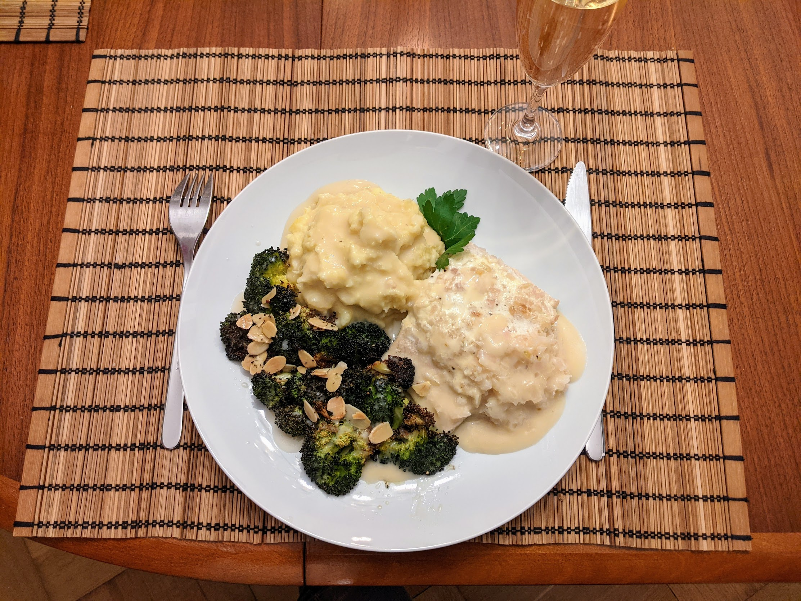

Saumon au champagne

Ici avec une purée de panais
Pour deux personnes :
- Deux pavés de saumon
- Deux grosses échalotes
- Environ 35cL de champagne
- Environ 15cL de crème liquide
- Une cuillère à soupe de fécule
- Sel, poivre, un peu de beurre
- Éplucher et couper les échalotes finement, et les faire revenir doucement dans une poêle avec un peu de beurre jusqu'à ce qu'elles soient translucides.
- Pendant ce temps, faire préchauffer le four à 200°C. Beurrer un plat à gratin et disposer le saumon dessus, la peau sur le dessous. Idéalement, il faut que le plat ne soit pas beaucoup plus grand que les pavés de saumon disposés dessus. Saler, poivrer.
- Disposer les échalotes autour du saumon. Verser 30cL de champagne et 15cL de crème, ou un peu plus ou moins : il faut que le liquide recouvre tout juste le saumon.
- Enfourner pour 20 minutes. Puis, récupérer la sauce et la faire chauffer à feu doux dans une petite casserole. Laisser le saumon et les échalotes dans le four avec la porte entre-ouverte, pour que ça ne refroidisse pas trop vite.
- Mélanger la fécule avec un peu d'eau dans un bol, et une fois que c'est à peu près homogène, rajouter le mélange dans la casserole de sauce. Bien mélanger et faire chauffer assez fort pour que ça épaississe.
- Lorsque la sauce a une consistance bien crémeuse, ajouter un trait de champagne, disposer sur le saumon, et déguster immédiatement, par exemple avec de la purée, du riz, et/ou des légumes rôtis.